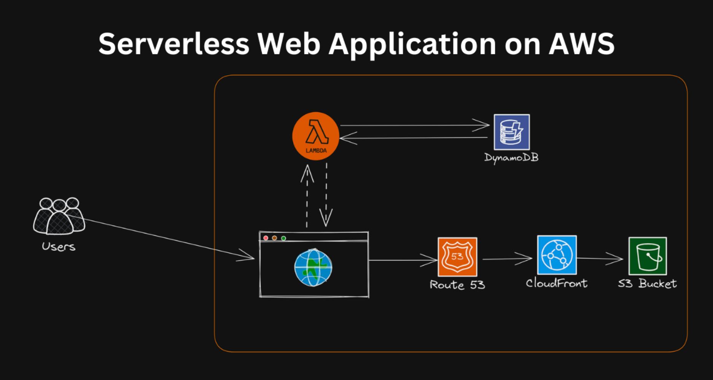

Welcome to the Project Documentation
Explore the architecture and learn how we built a serverless web app using AWS Lambda, DynamoDB, and S3.
Project Overview
This project showcases the development of a fully serverless web application using AWS services. The core idea is to implement a serverless architecture where the backend logic, data storage, and static content hosting are managed by AWS services, enabling scalability, cost efficiency, and minimal infrastructure management.
With this project, you can understand how AWS services can be leveraged to build modern web applications that are both robust and scalable. The primary services involved in this architecture are:
- AWS Lambda: Executes backend logic without the need for provisioning or managing servers. Lambda functions run your code in response to events and automatically manage the compute resources, scaling up or down as needed.
- Amazon DynamoDB: A fully managed NoSQL database service that provides fast and predictable performance with seamless scalability. DynamoDB is used for storing and managing application data with high availability and durability.
- Amazon S3: Simple Storage Service (S3) provides scalable object storage for static content like HTML, CSS, JavaScript, and media files. It is used to host the frontend assets of the web application.
- Amazon CloudFront: A content delivery network (CDN) that distributes content globally, reducing latency and improving the performance of web applications by caching static assets at edge locations close to the user.
Architecture Overview
The architecture leverages the following AWS services to build a robust, scalable, and highly available application:
The architecture consists of:
- AWS Lambda: Handles the backend logic, processing requests and interacting with DynamoDB. Lambda functions are triggered by API Gateway or other events and perform CRUD operations on the database.
- Amazon DynamoDB: Stores all application data, such as user information and other necessary data for the application. It provides fast and flexible data access, supporting key-value and document data structures.
- Amazon S3: Hosts the static assets of the application. The HTML, CSS, and JavaScript files are stored in an S3 bucket and served to users when they access the web application.
- Amazon CloudFront: Distributes the content from the S3 bucket to users worldwide, caching the static assets and reducing the load times of the application.
Project Workflow
The project is divided into several key stages:
- Create and configure a DynamoDB table: Start by defining the schema for the data you need to store. Configure the table's primary key and set up any necessary secondary indexes to support querying requirements.
- Develop AWS Lambda functions: Create Lambda functions to perform CRUD operations on the DynamoDB table. Each function will handle different aspects of the backend logic, such as creating, reading, updating, or deleting data.
- Host frontend assets on S3: Upload the static assets (HTML, CSS, JavaScript) to an S3 bucket configured for static website hosting. Ensure the appropriate permissions and bucket policies are set to allow public access.
- Set up CloudFront: Configure a CloudFront distribution to cache and deliver the static content from the S3 bucket. This improves the performance and availability of your web application by reducing latency and providing global content delivery.
Expected Outcomes
- Serverless app leveraging AWS services: By completing this project, you will have built a fully serverless web application that utilizes AWS services for backend logic, data storage, and content delivery.
- Hands-on experience with Lambda and DynamoDB: You will gain practical experience in developing and deploying Lambda functions and working with DynamoDB for data management.
- Optimized content delivery using CloudFront: You will understand how to use CloudFront to distribute and cache content efficiently, improving the performance of your web application.
Key Learning Areas
- Serverless architecture design: Learn how to design and implement a serverless architecture that eliminates the need for server management and scales automatically with demand.
- Lambda functions and API Gateway integration: Understand how to create Lambda functions and integrate them with API Gateway to expose RESTful endpoints for your web application.
- NoSQL databases with DynamoDB: Explore the principles of NoSQL databases and how to use DynamoDB for fast and flexible data management.
- Hosting static content and optimizing delivery with S3 and CloudFront: Learn how to host static web assets on S3 and optimize content delivery using CloudFront to enhance the user experience.